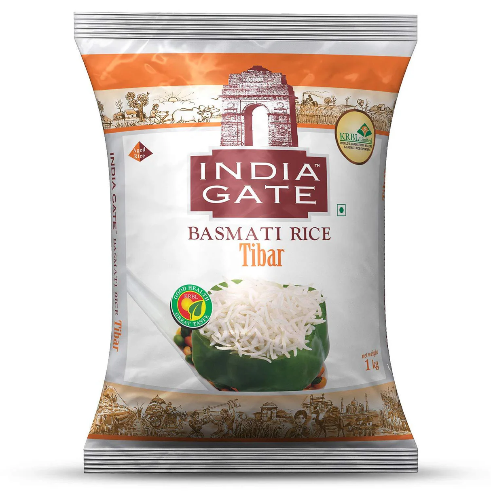
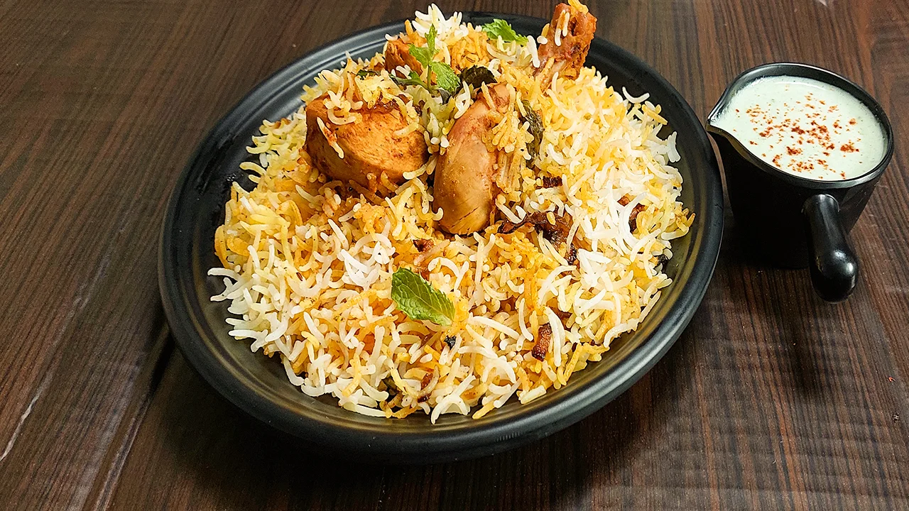

India Gate Basmati Classic
₹240.00/kg ₹240.00/kg
#Bachate₹aho | #HealthyGrains | #PureAndNatural | #RiceLovers | Vegetarian Product ✅
Available Sizes:
Product Highlights:
- Premium-quality long-grain basmati rice with a rich aroma
- Cooks extra-long, fluffy, and non-sticky for perfect meals
- Ideal for biryani, pulao, fried rice, and festive dishes
- Naturally aged for enhanced taste, texture, and fragrance
- More purity, better consistency, and superior quality
- Sourced from the finest paddy fields for an authentic experience
- Low in starch, making it light and easy to digest
- Perfect for daily meals and special occasions
- üçö Best for biryanis and pulao‚Äîlong grains that stay separate and aromatic.
- üí™ Rich in fiber‚Äîsupports digestion and gut health.
- üå± Aged to perfection‚Äîensures premium quality and taste.
- üß™ Scientific Fact: Basmati rice has a low glycemic index, making it suitable for managing blood sugar levels.
- üåü Why it's the best: India Gate Basmati is a global favorite, known for its exceptional aroma and texture.
Food Ideas with India Gate Basmati Rice:
